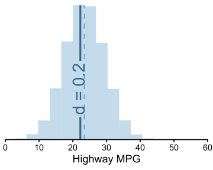
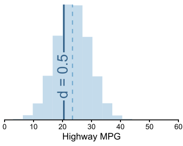
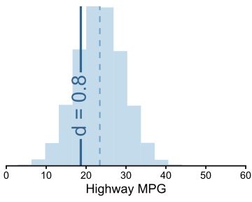

[1] -3.087686PSYC 6019-A01 / PSYC 6022-A01
2025-10-02 | Lab 6
Effect size
Power Analysis
Effect sizes provide ways to estimate the magnitude of an effect
○ Standardized, so we can compare differences across scales
Cohen’s \(d\): measure of difference (not a test)
○ Transforms to the z-scale, can interpret in standard deviation units
\[ d = \frac{\bar{x} - \mu_0}{s_x} \]
\[ d = \frac{\bar{x}_1 - \bar{x}_2}{s_p} \]
x_bar_four <- mean(four_cyl)
sd_four <- sd(four_cyl)
n_four <- length(four_cyl)
x_bar_eight <- mean(eight_cyl)
sd_eight <- sd(eight_cyl)
n_eight <- length(eight_cyl)
pooled_sd <- sqrt(
((n_four - 1) * sd_four^2 + (n_eight - 1) * sd_eight^2) /
((n_four - 1) + (n_eight - 1))
)
(x_bar_four - x_bar_eight) / pooled_sd[1] 2.804565\[ d = \frac{\bar{x} - \mu_0}{s_x} \]
effectsize::cohens_d(mpg$cty, mu = 30)Cohen's d | 95% CI
--------------------------
-3.09 | [-3.39, -2.78]
- Deviation from a difference of 30.\[ d = \frac{\bar{x}_1 - \bar{x}_2}{s_p} \]
\[ d = \frac{\bar{D}}{s_D} \]
effectsize::cohens_d(mpg$cty, mpg$hwy, paired = T)Cohen's d | 95% CI
--------------------------
-2.91 | [-3.20, -2.61]Based on mean (\(\bar{x}\) = 23.44 = 23.44) and SD (\(\bar{\sigma}\) = 5.95 = 5.95) of cars’ highway MPG (hwy).
Solved backwards for (\(\mu\)) based on different potential levels of d. “What would the hypothesized mean have to have been to get different levels of Cohen’s d?”
\[\bar{x} - d \times s = \mu\]
dat <- data.frame(x = rnorm(100000, x_bar, x_sd))
mu_ex1 <- x_bar - .2 * x_sd
mu_ex2 <- x_bar - .5 * x_sd
mu_ex3 <- x_bar - .8 * x_sd“What would the hypothesized mean have to have been to get different levels of Cohen’s d?”
“What would the hypothesized mean have to have been to get different levels of Cohen’s d?”



Power: the proportion of times we’d correctly reject the null hypothesis \(H_0\) when something else is true, over many hypothetical repeated experiments
Power analysis: the chance of correctly rejecting \(H_0\) if \(H_0\) is not the reality.
○ Given that our null hypothesis is \(H_0: \mu = \mu_0\),
○ How often would we correctly reject the null if \(\mu\) was not \(\mu_0\)?
\(\beta\): probability of incorrectly retaining the null when \(H_0\) is false \(1 - \beta\): power (probability of correctly rejecting the null when \(H_0\) is false)
What can we change in power analysis?
| \(1 - \beta\) | \(N\) | \(\alpha\) | \(\delta\) |
|---|---|---|---|
| Power | Sample size | significance level | true effect size |
If know three, can solve for the fourth.
Can manipulate potential values to create power curves for different combinations
We can use the pwr package in R to conduct power analyses! For a t-test,
pwr.t.test(n, d, sig.level, power)
n = sample size in each group
d = true effect size
sig.level = significance level, \(\alpha\)
power = power, \(1 - \beta\)
Specify exactly three of the four, it will fill in the fourth
alternative = type of test, default is "two.sided"
pwr::pwr.t.test(n = 10, d = 0.3, sig.level = 0.05)
Two-sample t test power calculation
n = 10
d = 0.3
sig.level = 0.05
power = 0.09742459
alternative = two.sided
NOTE: n is number in *each* grouppwr::pwr.t.test(n = 50, sig.level = 0.05, power = 0.8)
Two-sample t test power calculation
n = 50
d = 0.565858
sig.level = 0.05
power = 0.8
alternative = two.sided
NOTE: n is number in *each* grouppwr::pwr.t.test(d = 0.3, sig.level = 0.05, power = 0.8)
Two-sample t test power calculation
n = 175.3847
d = 0.3
sig.level = 0.05
power = 0.8
alternative = two.sided
NOTE: n is number in *each* groupObject contains a list of each argument, including the one it calculated
power_test <- pwr::pwr.t.test(n = 10, d = 0.3, sig.level = 0.05)
power_test |>
glimpse()List of 7
$ n : num 10
$ d : num 0.3
$ sig.level : num 0.05
$ power : num 0.0974
$ alternative: chr "two.sided"
$ note : chr "n is number in *each* group"
$ method : chr "Two-sample t test power calculation"
- attr(*, "class")= chr "power.htest"Can pull the calculated statistic out with $
power_test$power[1] 0.09742459Can create power curves by iterating over candidate values for one of the inputs and calculating the remaining.
Example: You are running a study that you believe has a true effect size of \(\delta = 0.25\). You want to test your hypothesis with a t-test at \(\alpha = .05\). What will your power be at varying levels of sample size \(N\) per group?
sample_sizes <- c(10, 30, 100, 300)
power_values <- map_dbl(
sample_sizes,
function(sample_size)
pwr::pwr.t.test(
n = sample_size,
d = 0.25,
sig.level = 0.05)$power
)map_dbl(): iterate over every item in sample_sizes, do something to it, and return a double (a number with decimal points).
function(sample_size): defines a function — this tells map_dbl() what we want to do to each sample_size.
pwr::pwr.t.test(...)$power: the same function we were using before.
Add more candidate \(N\) values with seq(min, max, by) and clean up the plot
seq(1, 10, by = 1) [1] 1 2 3 4 5 6 7 8 9 10seq(1, 10, by = 2)[1] 1 3 5 7 9seq(1, 10, by = 5)[1] 1 6sample_sizes <- seq(10, 300, by = 20)
power_values <- map_dbl(
sample_sizes,
function(sample_size)
pwr::pwr.t.test(
n = sample_size,
d = 0.25,
sig.level = 0.05)$power
)sample_sizes <- c(10, 30, 100, 300)
power_values <- map_dbl(
sample_sizes,
function(sample_size)
pwr::pwr.t.test(
n = sample_size,
d = 0.25,
sig.level = 0.05)$power
)Even better, do it all in a data frame
power_values_df <- tibble(
sample_sizes = seq(10, 500, by = 20)
) |>
mutate(
power = map_dbl(
sample_sizes,
function(sample_size)
pwr::pwr.t.test(
n = sample_size,
d = 0.25,
sig.level = 0.05)$power
)
)Let’s you easily add more conditions…
power_values_df <- tibble(
sample_sizes = seq(10, 500, by = 20)
) |>
expand_grid(d = c(0.2, 0.25, 0.3, 0.4)) |>
mutate(
power = map2_dbl(
sample_sizes, d,
function(sample_size, d)
pwr::pwr.t.test(
n = sample_size,
d = d,
sig.level = 0.05)$power
)
)